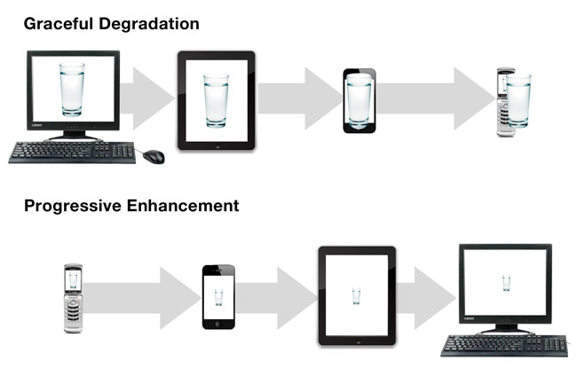

ThoughtWorks®
HTML5,CSS3
HTML5
Tags
- block element, inline element
- replaced element, non-replaced element
- flow, heading, sectioning, phrasing, embedded, interactive, metadata

Strict Rule
- a not contain interactive element(a, button, select)
- p not block element (p, div, h1~h6, ol, ul, li, dl, dt, dd, form)
语义化
每个标签做它该做的事
- header, footer, nav, section, article, aside, figure
- canvas, XML:SVG
- audio,video
- time
- input[type="email | tel | url | ... "][placeholder][required], datalist
Q & A
css3
- border-radius: 10px
- box-shadow: 2px 2px 5px #ccc inset
- text-shadow: 2px 2px 5px #ddd
- background-size: 10px 10px | 50% | cover | contain
- opacity
- background-color:rgba(255, 255, 255, .5)
flex
- flex-direction, flex-wrap, flex-flow, justify-content, align-items, align-content
- order, flex-grow, flex-shrink, flex-basis, flex, align-self

Example
Animation
- transform
- transition
- @keyframes，animation
2D & 3D transform
- translate()
- rotate()
- scale()
- rotateX()
- rotateY()
Example
transition
Example
@keyframes
Example
CSS Compatibility
- -moz-*
- -webkit-
- -ms-
Progressive Enhancement, Graceful Degradation
Example